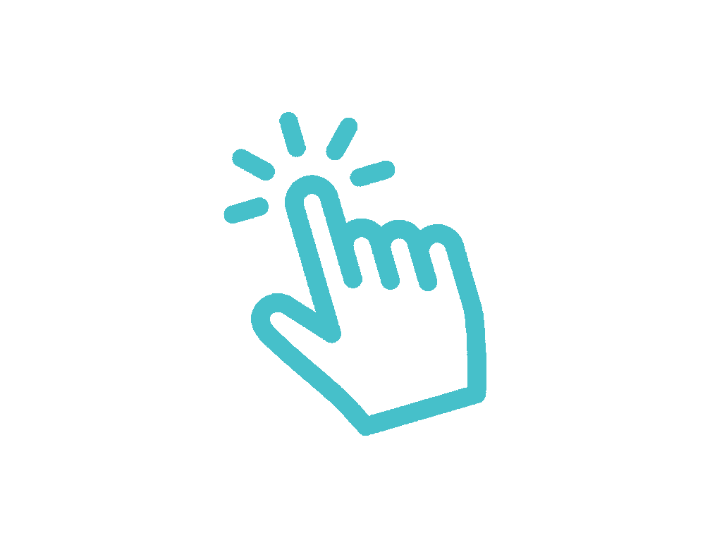

Ссылки на меня
В данном резюме будем описан мой опыт работы и небольшая моя история
- Первое о чем тут будет написано,это как я пришёл ко всему этому
- Второе,как я написал этот сайт
- И как итог,вы узнаете сколько времени и изучений я на это потратил и все мои соц сети
Начало
Первое что вам нужно знать это моя цель для чего же я решил пойти в программисты и чего хочет от этого
Моя цель состоит в том что я хочу работать дома не выходя из него сидеть и работать за компьютером
Я никогда не любил общаться с людьми и не любил шумные компании
однажды я познакомлся с творчеством одного человека его ник был "Хауди"
Его творчесво познакомило с программирование и дало небольшой интерес ко всему этому она рассказывал как добился
добивался всего и чего ему это стоило как читал книги и тд
.png)
но я никогда не любил убиться никогда не понимал зачем оно мне зачем мне учить то что мне не интересно
тем самым я начал пробовать себя в сфере игр начал писатькод впервые не относясь к нему с серьёзностью я относился к этому как какой-то игре
чему-то веселому но захватывающему начал пробовать что-то делать и начало получаться то что интересовало ещё больше конечно из-за сверстников и родителей было тяжело что-то понимать
но я пытался бросил это дело но потом когда немного подрос и понял что я хочу жить этим дело хочу развиваться в этом направление да я не могу похвастаться пока успехом каким-то но цель
всей моей жизни это работать программистом дома
тем самым я начал пробовать себя в сфере игр начал писатькод впервые не относясь к нему с серьёзностью я относился к этому как какой-то игре
чему-то веселому но захватывающему начал пробовать что-то делать и начало получаться то что интересовало ещё больше конечно из-за сверстников и родителей было тяжело что-то понимать
но я пытался бросил это дело но потом когда немного подрос и понял что я хочу жить этим дело хочу развиваться в этом направление да я не могу похвастаться пока успехом каким-то но цель
всей моей жизни это работать программистом дома

Написание сайта
Для достижение написание этого сайта я вычил много чего и практиковался целый деньЕсли есть у человека интересно он выучит и научиться всему что ему интересно познать люди устроены так чтобы чем-то интересоваться они не могут
они не могу без своего интереса или цели потому что это их смысл жизни
Итог
Тем самым я и добился всего этого т.к. я сам захотел это всё делать сам узнавал всё делал сам писал самэто не так сложно как кажестся просто не нужно сидеть в сомнениях как это было со мной я бы не таких уж и хорошим человеком и имел не такое уж и хорошое воспитание
Я хочу всего лишь одного это сидеть дома и работать в своё удовольствие